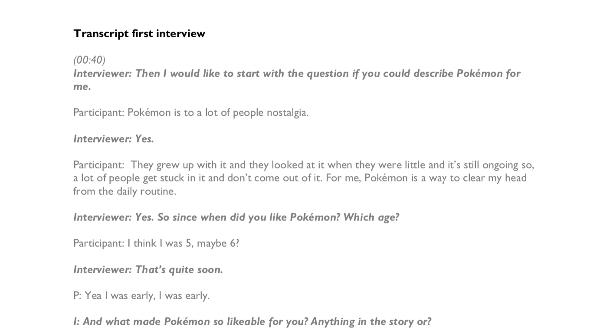
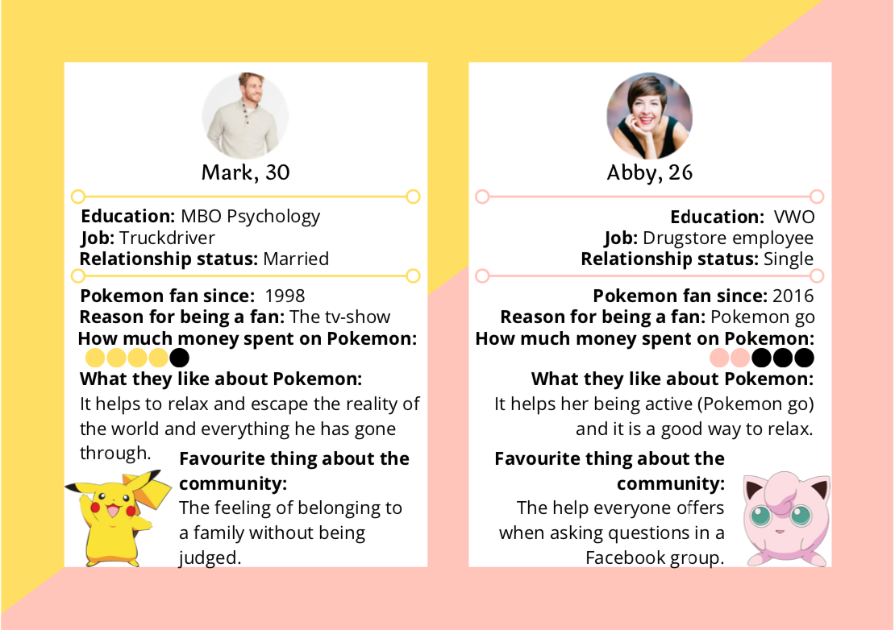
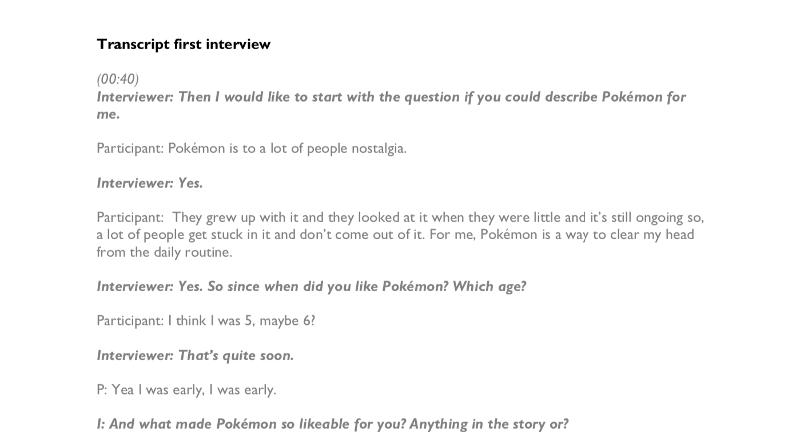
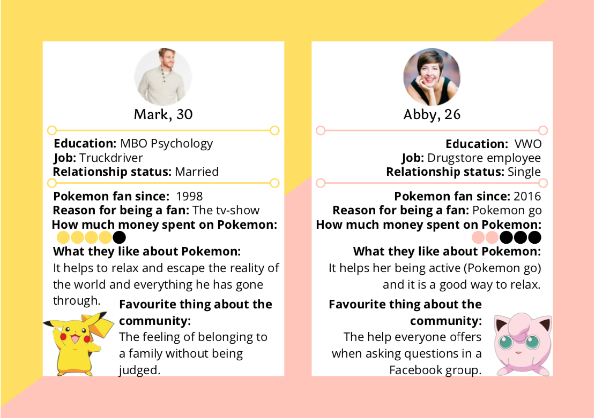

Projects
2019
Doing research is one of the most important things during designing for a user. You need to know what you are designing for and what your client or user wants. To better our skill in research we had to do our own research of a subculture in The Netherlands. One that we weren’t part of, so we would go in with a blank canvas. My subculture of choice is Pokemon fans, because I felt there was something more there than just people that liked a serie or game.
To find out more about this subculture, I conducted two interviews, bettering my skills in interviewing and providing me more information about this group. Of those interviews I made a transcript (see picture on the right), so I had a clearer overview of all the information given. To get further information I also went to a convention where a lot of Pokemon fans were and took some pictures to analyse later. With all the information together I tried to find similarities between all the people that provided me data so I could get a conclusion out of it.
Out of conclusions I made two persona’s, showing the two different types of Pokemon fans that I experienced. The bit more hardcore fan and the fan that loves Pokemon but doesn’t really act on it that much. They both have different reasons for joining the fanbase, for example one person got into Pokemon because of the tv-series and the other got into it because of Pokemon GO.
This project really showed me how important research is for a design, because you should know what to look for and where to focus on.
 


